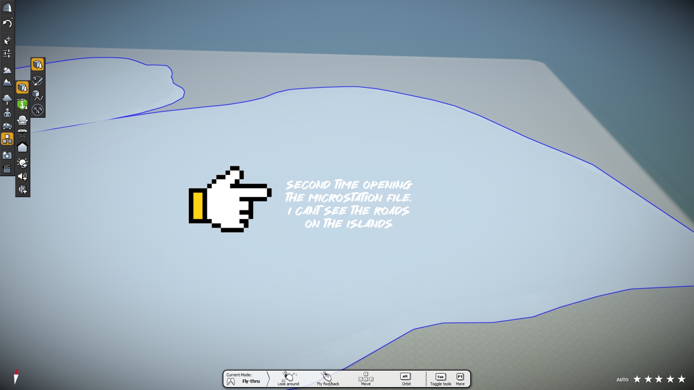

Hi, Fernando
Here's a test microstation model file. You can download it here if you want. Notice the land is green.
But when I open it in LumenRT there is a grey area indicated by the hand in the image. Do you know why that is?
Not sure if this is the right way to do it, but even after attaching the island files, and setting the geographic coordinates, the surrounding terrain still isn't of Penang.
We dont see the sea in this terrain.
For the file Penang Reclamation Island_Plan.dgn, your solution of pressing the "fit view" works, but the south islands dont seem to be appearing.
gd
When I open the file in Lumen RT the islands dont appear as well.
Here I use the file Penang Reclamation Island_Islands Terrain.dgn. It seems to show the islands and the terrain.
But when I open it in Lumen RT it doesn't show the terrain like yours do.
In your training video, it shows the Penang Terrain.
Once I have open a terrain microstation file in Lumen RT, how do I import your microstation model (.dgn) file into the terrain?
Not sure if it is the right way, but I did it by exporting my .dgn file into an .obj file. However it loses the layers which we can assign different material to our 3D model if we open Lument RT directly from our .dgn file in microstation.

I opened my file EdPSI.dgn which is basically "Penang Reclamation Island_Islands Terrain.dgn" but this time I do not see the roads on the island. Do you know why is that?
Thanks for helping out Fenando. Cheers.